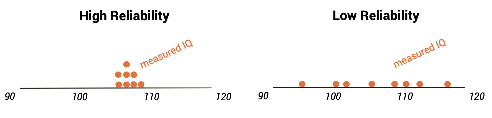
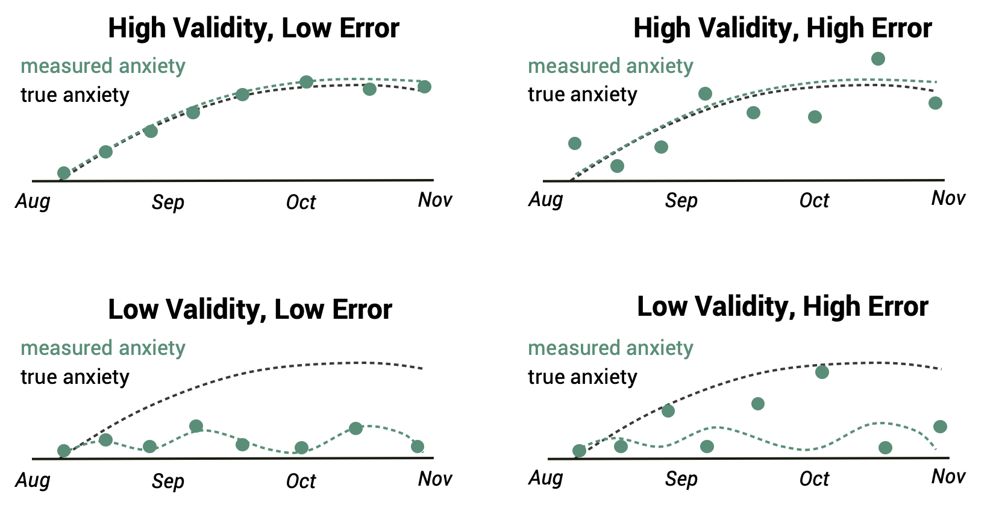

2 What are Data
Although we can apply statistical techniques to any bunch of numbers1, we generally want to analyze numbers that represent something about the world. These numbers we refer to as data. Data are the focus and currency of statistics - you can’t do it without data, and qualities about the data determine the type of reliability of your analyses. In this chapter, we will discuss different kinds of data, how they are represented in R, and how to reason about when data are good quality or not.
2.1 Scales of measurement
Think of all the things you could measure about a person - their physical attributes, their personality, their beliefs and opinions… Now, think about how you would measure those attributes. Would we write down numbers, or words? What kind of values would be valid entries? How would those values relate to each other?
We talked last chapter about operationalizing our variables, and part of that means being specific about what concepts you are measuring. But in even more detail, operationalization involves specifying the scale of measurement. for a variable - the nature of values the variable can take and how those values relate to each other.
A categorical variable (also called a nominal variable) is one where each value of the variable represents a different category of something. These categories are distinct, and they’re not inherently sortable. For example, say we ran a survey in class that asked “What is your favorite food?” Some of the answers may be: blueberries, chocolate, tamales, pasta, and pizza. These data do not have any true ordered relationship with one another - chocolate is not more or less than pasta in some way. The values are just labels for different categories.
An ordinal variable has values where the magnitude matters, but only for ordering the values, not for determining how far apart any of the levels are from each other. For example, we might ask a person with chronic pain to complete a form assessing how bad their pain is, using a 1-7 numeric scale. While the person is presumably feeling more pain on a day when they report a 6 versus a day when they report a 3, it doesn’t mean their pain is twice as bad on the former versus the latter day. There isn’t a unit of measurement available, only a sense of one option being stronger than another. The ordering gives us information about relative magnitude, but the differences between values are not necessarily equal in magnitude.
An interval variable (also called a continuous variable) has all of the features of an ordinal scale, but in addition the distance between units on the measurement scale are measurable and consistent. A standard example is temperature; the physical difference between 10 and 20 degrees is the same as the physical difference between 90 and 100 degrees.
2.2 Representing data in R
Our above discussion of scales of measurement imply something about the way data are recorded - with numbers and words. How do we work with these data in code?
We’ve used R objects so far to store a single number or message. But in statistics we are dealing with many values. Luckily, an R object can also store a whole set of values. This set together is called a vector. You can think of a vector as a list of many elements.
The R function c() can be used to combine a list of individual values into a vector. You could think of the “c” as standing for “combine.”
In the following code we have created two vectors (we just named them my_vector and my_vector2) and put a list of values into each vector. Run the code to see what happens, and then write some code to return them in the console.
Many functions will take a vector as the input/argument.
For example, try using max() to find the largest number in my_vector.
There may be times when you just want to know a subset of the values in a vector, not all of the values. We can index a position in the vector by using brackets with a number in it like this: [1]. So if we wanted to print out just the first item in my_vector, we could write my_vector[1].
Write code to get the 4th value in my_vector.
We’re not limited to indexing only one position at a time. We can also pass a vector of multiple index positions inside the brackets to return only those positions:
And if we want to return a whole chunk of the vector (say, the 1st through the 4th position), we don’t have to type out c(1,2,3,4) within the brackets. The : operator works like the word “through”, such that the code 1:4 means “every value from the 1st through the 4th, inclusive”.
Finally, what if we want to return every item in a vector except a particular one? Then we get to use negative indexing! Simply put a negative sign in front of an index position, and that will remove the item at that position from the output.
Try using both the colon method and the negative indexing method below.
2.3 Data types
There are different values we can use to represent data when we store it in vectors. Compared to a variable’s scale of measurement, which refers to the nature of the values in the real world, a variable’s data type is the set of possible values the variable can take when we record it and put it into a computer. In some instances a variable’s scale of measurement implies what it’s data type will be when written down, but this is not always the case.
2.3.1 Qualitative data
Some data are represented qualitatively, meaning that the values are words/labels. In R, data written as words or letters use the character data type. Remember at the beginning of Chapter 1 when you printed out "hello world!"? By putting those words within a set of quotation marks, we created a character-type object. This is also known in other programming languages as a “string”. If we forget the quotes, R will think that a word is a name of an object instead of a character value.
Anything you can type with a keyboard can be stored as a character data type, so long as it is between quotes. Note that this includes numbers - for example, when 20 is in quotation marks like “20”, it will be treated as a character value, even though it includes a number. R doesn’t care whether you use single quotes, ‘like this’, or double quotes, ”like that”.
You can also put character objects into a vector, to represent a set of qualitative data.
Write code to print out the 5th way of saying hello in this vector.
2.3.2 Numeric data
Quantitative data, on the other hand, are represented as numbers exclusively. In R, when the program sees typed numbers, it will usually assume you’re talking about a numeric value type.
Based on these definitions of quantitative and qualitative data types, it may seem like categorical data (scale of measurement in the world) should always be represented as character data (data type in a computer) while ordinal or interval data should always be represented numerically. However, it is possible to use multiple data types for the same scale of measurement. For example, this table shows the results from the same class favorite food survey, but presented in a different way:
| Food choice | Number of students |
|---|---|
| blueberries | 2 |
| chocolate | 8 |
| tamales | 5 |
| pasta | 6 |
| pizza | 10 |
The students’ answers were qualitative, but we recorded a quantitative representation of them by counting how many students gave each response.
Likewise, a researcher might choose to use numbers as a sort of code or label in place of a full qualitative description. For example, if they recorded what hand every student in a class used to write with, they could save the variable as:
handedness_word <- c("left","right","right","right","right","left","right","right","right")
That’s a lot of typing though. Instead, they could choose to assign “right” the value of 1, and “left” the value of 2. This would create a vector like:
handedness_label <- c(2,1,1,1,1,2,1,1,1)
This is much easier to type! More consequentially, the majority of the statistical tools we will use to analyze data are equations that need quantitative values to operate on. For this reason, researchers often need to quantify their data by turning it into numbers in some way. So don’t assume what scale of measurement a variable has based simply on it’s data type when recorded in a dataset. Instead, think about the nature of what those values represent in the real world.
2.3.3 Boolean data
Boolean values2 (also called “logical” or “binary” values) are another common data type in R. Boolean data represent the truth of something and can only have one of two values, True or False. For example, maybe we have a statement such as: “the value of A is greater than the value of B”. We can ask R to evaluate this and return the answer TRUE or FALSE. We can do that by using logical operators like >, <, >=, <=, and ==. There is also a logical operator to check whether values are not equal: !=. For example, 5 != 3 is a True statement. When we save the results of this statement in an object, we have stored a Boolean data type.
Below is a table of the logic operators in R that you can use for making logic statements.
| Symbol | Example use | Meaning |
|---|---|---|
| < | A < B | A is less than B |
| > | A > B | A is greater than B |
| == | A == B | A is equal to B |
| <= | A <= B | A is less than or equal to B |
| >= | A >= B | A is greater than or equal to B |
| != | A != B | A is not equal to B |
| %in% | A %in% c(B1, B2, B3) | A is in the set [B1, B2, B3] |
| %notin% | A %notin% c(B1, B2, B3) | A is not in the set [B1, B2, B3] |
| & | A == B & C == D | A equals B AND C equals D (both statements are true) |
| | | A == B | C == D | A equals B OR C equals D (either statement is true) |
In R, if you want to know whether A is equal to B, use the double equal sign, ==. The single equal sign is sometimes used instead of the assignment operator, <-, but in more niche cases that you’ll learn later. Use the arrow <- to assign values to an R object, and == to ask whether two values are equal.
Read this code and predict what value will come out of the R console. Then run the code and see if you were right.
Similarly to how the same scale of measurement can be represented with qualitative or quantitative data types, lots of things can be represented as Boolean data if you think about it. For example, the researcher above could choose to represent handedness as a Boolean by conceptualizing the variable as the truth of the statement: “this person is right-handed.”
handedness_bool <- c(FALSE, TRUE, TRUE, TRUE, TRUE, FALSE, TRUE, TRUE, TRUE).
If the same scale of measurement can be represented with different data types, how do you pick which type to use when you’re writing data down? A good idea is to think about what operations you plan to do on the data when analyzing it. This will guide you on what type the value needs to be for that operation to make sense.
Sometimes you forget what type an object was that you created a while ago, or you will receive some data from somewhere else with pre-defined objects. If you ever need to find out the type of an object, you can simply use the command str(OBJECT_NAME). Str is short for “structure.” It will print out the type of the object, its value(s), and its size if the object is storing more than one value.
Try it out here:
There are technically subtypes of values within the umbrella of numeric (double, integer, etc.) or qualitative (character or factor). You don’t need to know the difference for this book, just remember that when R returns one of these for a data type, it’s a sort of number or qualitative value.
2.4 Converting data
Sometimes you will have data in one format that you would prefer to have in another - e.g., you have a variable for someone’s zip code, but R is trying to evaluate that data type as quantitative instead of qualitative. That doesn’t make sense - the zip code 91711 isn’t quantitatively comparable to 01434, it’s just using numbers to denote a category. How would you convince R to treat these numbers as a qualitative variable?
Luckily, you don’t need to rewrite the whole data vector with quotations manually. You can use a function to recast the vector of numbers into a character data type. The function that converts numerical data to character is as.character().
Try it out below:
When we encode the values of a variable using numbers, it is always important to keep in mind what the numbers mean - their true scale of measurement. The value 2 has a very different meaning if it represents the handedness of a person (categorical; 2 is a convenient label) than if it represents their age (interval; 2 is a count of years). When we use statistical software to analyze data, the software processes the numbers. But the software doesn’t know what the numbers actually mean. Only you know that.
We can also turn a character variable into a numeric variable by using the as.numeric() function, if possible. This is useful in the case where a dataset has numbers that accidentally get saved as character types.
Besides just the data types, we can also convert the actual values of data within variables into something else. For example, imagine you have water depth data measured in inches, but you’d prefer to see it in feet. In this case, you will need to transform each value in the vector holding that data.
Again, you don’t have to manually retype the vector to do this. Vectors in R work like vectors in linear algebra. So, if you have a constant value you want to modify a vector by, you can simply use the mathematical operation between that value and the vector object. E.g., in the water depth example, you could write water_depth / 12 to convert every measurement in the water_depth vector from inches to feet. When you use an operation between a vector and a single value, R will apply that operation to every item in the vector individually.
Try it here:
Notice that when you do a calculation with a vector, you’ll get a vector of numbers as the answer, not just a single number.
After you multiply my_vector by 100, what will happen if you return my_vector? Will you get the original vector (1,2,3,4,5), or one that has the hundreds (100,200,300,400,500)? Try running this code to see what happens.
Remember, R will do the calculations. But if you want something saved, you have to assign it to an object.
Write some code to compute my_vector * 100 and then assign the result back into my_vector. If you do this, it will replace the old contents of my_vector with the new contents (i.e., the product of my_vector and 100). (Hint: you can use objects in the same command where you redefine their values).
We can also create Boolean vectors by subjecting a whole vector to a logical statement. Since a logical statement is an operation, R will apply it to every item in the handedness vector.
Sometimes you will need to do something more complicated. Instead of modifying each value in a vector by the same amount, you might want to make a different modification. E.g., say you want to know how much each person improved their SAT scores with practice, but you only have their first and last scores saved as data. Everyone improves at different rates, so you can’t add the same score to each person. Instead, you could do end_score - beginning_score. If both end_score and beginning_score are vectors of the same length, R will apply the operation to each item pairwise: the first item of beginning_score will be subtracted from the first item of end_score, the second from the second, third from the third, and so on.
Write code that will subtract beginning_score from end_score, and return the resulting vector.
What do you expect from the code below? Make a guess first, then run the code to see what happens.
2.5 What makes good data?
You can’t fix by analysis what you bungled by design.
– RJ Light, JD Singer, and JB Willett By Design: Planning Research on Higher Education
Data are meant to be a clear and accurate recording of some value out in the world. However, in many fields such as psychology, the thing that we are measuring is not a physical feature, but instead an unobservable theoretical concept, which we refer to as a construct. This can make data collection tough.
For example, let’s say that we want to test how well you understand the distinction between categorical, ordinal, and interval scales of measurement (do you remember? test yourself!). Unfortunately, we can’t pop open your skull and look at how big the “stats knowledge” part of your brain has grown. The only way we have to measure this construct is indirectly - maybe a quiz that asks several questions about these concepts and count how many you got right, or a self report about how confident you feel in knowing the material.
As you can imagine, there are reasons a measured value might not match the true value when you’re dealing with indirect measurements. A low quiz score could mean low knowledge, or the test-taker happened to be sick that day. Maybe the quiz asked for written code instead of conceptual understanding, so the kind of knowledge it assessed was different than purported. For these reasons, everyone who works with human data3 needs to be able to evaluate how good their data are. This will have large implications for how much you can trust analyses of the data.
2.5.1 Reliability
Reliability refers to the consistency of our measurements across repeated recording. In other words, if you measure the same thing several times, do you get the same value?
There are different kinds of reliability that refer to different kinds of repetition. Test-retest reliability refers to the similarity of measurements across time. For example, someone might give you a cognitive test of spatial reasoning twice, once today and once tomorrow, and compare your scores on the two days. If the reliable measure of your true spatial reasoning ability (which shouldn’t change on such a short time scale), we would hope that the scores would be very similar to one another.
Another form of reliability is internal consistency. This refers to the similarity of measurements across items that are supposed to measure the same construct. This type of reliability is a focus of survey research, where researchers include several questions that are all supposed to measure the same thing. If they actually do, then the answers to those questions should be similar to one another. If participants give very different answers to some of the questions, then the survey is not internally consistent.
Another way to assess reliability comes in cases where the data consist of judgments by different people. For example, let’s say that a researcher wants to determine whether a treatment changes how well an autistic child interacts with other children, which is measured by having experts watch the child and rate their interactions with the other children. In this case the expert raters are the measurement instrument and we want to know how much we should trust the ratings they generate. If multiple judges give very similar scores to each autistic child they saw, the judges have high inter-rater reliability.

Reliability is important if we want to compare one measurement to another, because the relationship between two different variables can’t be any stronger than the relationship between either of the variables and itself (i.e., its reliability). An unreliable measure will never have a strong statistical relationship with any other measure. For this reason, researchers developing a new measurement (such as a new survey) will often go to great lengths to establish and improve its reliability.
However, reliability should only be assessed in cases where the true value shouldn’t be changing. We wouldn’t expect reliability of self-reported anxiety scores administered one year apart because someone’s mental health can certainly evolve in that time. Nor should we expect reliability of judgments from raters who were trained differently. In these cases, we’d expect the underlying true value to be different between measurement instances, so the measured scores should be different as well.
2.5.2 Validity
If a measured variable proves to be unreliable, there are a few possible reasons why. One is the validity of the variable. This is the extent to which our measurements actually reflect the true construct of interest. Imagine you are trying to measure someone’s extroversion by counting how frequently they go out with friends each day. Personality theory asserts that extroversion should be pretty consistent across years of someone’s life, but your measurements about social activity are very different on each day within the same person. That might be because your social activity measure is not a completely valid measure of extroversion - it is also caused by other unrelated things, like mood and work schedule. So daily changes in social activity don’t reflect changes in extroversion so much as they reflect other things.
Note that if a measure is reliable, that doesn’t automatically mean it’s valid. We could score your well-being as “excellent” every day that you aren’t in the hospital, which would probably have high test-retest reliability. But that misses important variations in mental health, financial security, social connection, etc. that would impact your sense of wellness. In this way, hospitalization is not an entirely valid measure of well-being.
There are a few common ways to assess the validity of measure. One is face validity - does the measurement make sense on its face? If I were to tell you that I was going to measure a person’s blood pressure by looking at the color of their tongue, you would probably think that this was not a valid measure on its face. On the other hand, using a blood pressure cuff would have face validity. This is a first reality check before we dive into more complicated aspects of validity. If you read about a construct measurement that doesn’t seem face valid to you (e.g., “what your shirt color says about you!!”), you should be immediately suspicious of it until there is good evidence of other validity.
Other approaches to assessing validity include convergent and divergent validity. These mean that, if the measurement is valid, there should be an association between it and theoretically similar constructs and no association between it and unrelated constructs. For example, a valid measure of impulsiveness should be associated with a measure of risk-taking, but not associated with political beliefs.
2.5.3 Measurement error
Another reason for low reliability in data is measurement error. Even if we are measuring a valid construct, our recorded values may be different from reality because of an imperfect measurement system. Measurement error can come from lots of places - a poorly calibrated timer, participant motion during a brain imaging session, imperfect self insight while filling out a survey, etc.
Measurement error is typically considered to be random differences between a true score and a measured score - the measured values fluctuate more than the true score does, but on average they fall around the true score. Validity on the other hand is more about systematic differences between a true score and a measured score, such as other constructs causing the measured value. As invalid measure will be systematically the wrong score.

We generally want our measurement error to be as low as possible, so you’ll need to think hard about how you can improve the quality of your measurement system (for example, using a better timer to measure reaction time). Another option to improve measurement error if your measurement system can’t be perfected is to measure many times and average the values together, since the deviations are random. This is what is happening when you answer a survey with many similar questions, or do a psych study with many trials.
Note that when evaluating the reliability, validity, and measurement error of a measurement process, we don’t say it is “good” or “bad” in an absolute sense. No indirect measure is perfectly valid or invalid; almost nothing about a human can be measured without some measurement error. Instead, we evaluate whether our data quality are good enough for a particular purpose, or if they are better/worse than some other measurement approach. It’s about evaluating the limits of what these data can tell us, not about accepting them uncritically or completely throwing them out.
2.5.4 Outliers
Reliability, validity, and measurement error are properties of how an entire variable was collected, meaning all data values recorded are affected in some way. However not every research participant is the same, so not every participant will have the same experience in your study. It is possible that most data points in your dataset are good data, but a few people misunderstand a question or skip it for some personal reason. Humans are messy like that. In these cases, you’ll have a few data points that don’t represent the correct real world value.
If some data point is very unusual compared to the rest of the dataset (e.g. someone reporting their age as “211” when everyone else is 18-24), that is called an outlier.
Not all outliers are invalid data points - it’s possible to get a very tall person in your sample of otherwise short people, for instance. But if a data value is unusual because it is not recorded correctly, that is the kind of bad outlier than can mess up analyses.
2.5.5 Missing data
If a data point is missing entirely, that is a missing value. Some analyses can be computed with missing values among the data, but some others mathematically break and thus need researcher intervention.
There are different opinions about what to do if there are outliers and/or missing values in your data. Some people remove the data for observations with missing values so that they’re not included in analysis, while others use imputation (replace what is recorded with a reasonable value). Some people do also do for all unusual outliers, or only those that are obviously wrong values. In later chapters of this book we will do some simple outlier/missing data handling when learning about data cleaning, but it is outside the scope of this course to tell you what to do with your missing data and outliers in all situations because the answers are complex and debated. If you’d like to go deeper into the topic after you’ve finished this intro book, there are some great advanced texts such as Outliers in Statistical Data by Barnett and Lewis (1994) and Applied Missing Data Analysis by Enders (2022).
2.6 Chapter resources
2.6.1 Learning goals
After reading this chapter, you should be able to:
- Explain the difference between categorical, ordinal, and interval data
- Make a vector in R
- Describe the difference between qualitative and quantitative data
- Covert vectors of data into different data types
- Do basic math operations on vectors
- Explain reliability, validity, and measurement error as they pertain to data quality
2.6.2 New concepts
- scale of measurement: The way values of a variable inherently relate to each other in the real world.
- categorical data: A scale of measurement where data values cannot be ranked or numerically calculated on, only classified.
- ordinal data: A scale of measurement where data values have a natural order, but the distance between each level is not physically defined.
- interval data: A scale of measurement where data values have a natural order, the distance between each level is physically defined, and there is equal distance between each subsequent value.
- vector: A type of data structure in R that stores a list of elements.
- index: The position of a particular value in a vector.
- data type: The way values of a variable are stored in a computer.
- qualitative data: Non-numerical information that represent characteristics or qualities.
- character: A data type in R used for representing qualitative data; with alphanumeric symbols surrounded by quotes.
- quantitative data: Information that is represented with numbers.
- numeric: A data type in R used for representing quantitative data.
- Boolean: A data type that can have only two possible values, true or false.
- construct: A theoretical phenomenon one wishes to study.
- reliability: Consistency of measured values when the true underlying score doesn’t change.
- test-retest reliability: Consistency of measured values across time.
- internal consistency: Similarity of measurements across items that are supposed to measure the same construct.
- inter-rater reliability: Consistency of ratings provided by multiple judges.
- validity: Correspondence between what a measure intends to capture and what it actually does.
- face validity: A sense of the appropriateness of a measure based on one’s general understanding of the domain.
- convergent validity: Extent to which a measure is statistically associated with a theoretically similar construct.
- divergent validity: Extent to which a measure is statistically unrelated to irrelevant constructs.
- measurement error: Random deviations between a true value and what is measured due to an imperfect measurement process.
- outlier: A data value that is very different than the rest of the sample it belongs to.
- missing value: A data point whose value is not recorded.
- imputation: The principled process of replacing some data values with other values.
2.6.3 New R functionality
2.6.4 Further reading
Even made up numbers! More later on why we would want to do that…↩︎
Named after English mathematician George Boole, who developed a system of logic that is the basis for modern computer science.↩︎
Actually this applies to everyone, but the physical sciences have it on easy mode with all their direct measures and sensitive instruments.↩︎